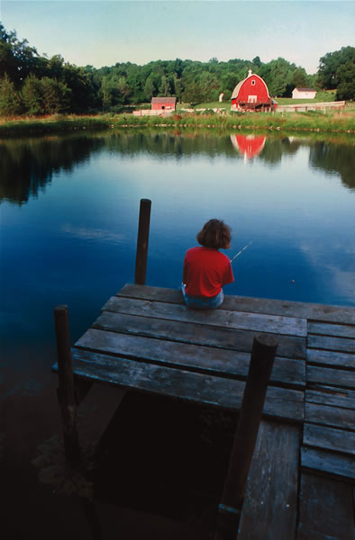
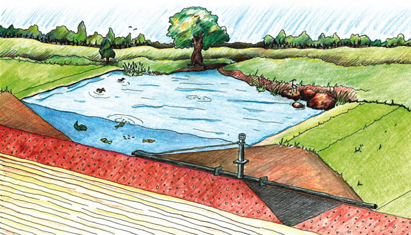
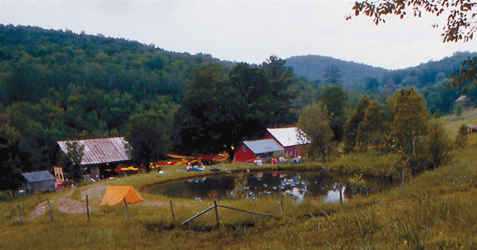
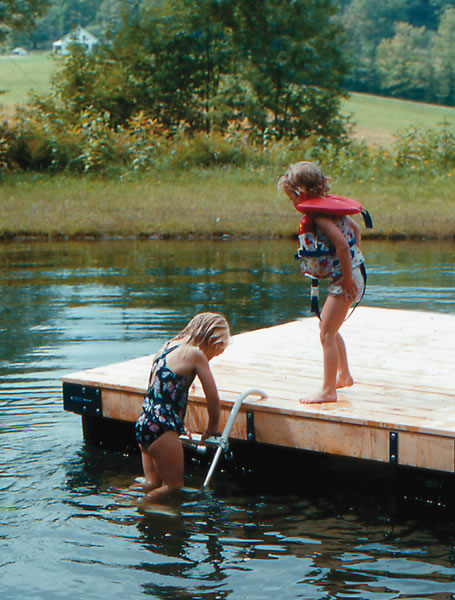
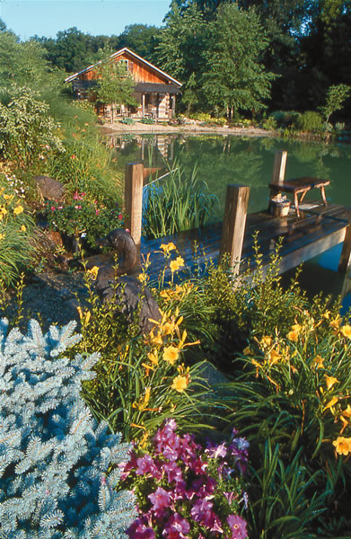
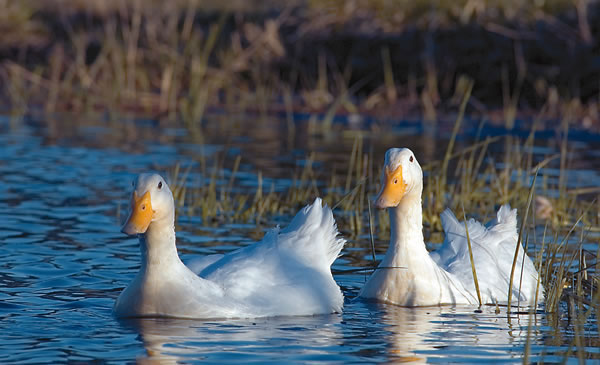

One of the first things many people say when looking out over a few acres is, “I wish I had a pond.” Ponds add scenic beauty to a property and provide opportunities for boating, swimming and fishing. There also are many practical uses for a pond?-?livestock watering, crop irrigation, fish production, wildlife habitat and as an emergency source of water for fighting fires.
In 1956, when my parents bought 15 acres in the country, the first thing they did was build a pond. Actually, Mom and Dad didn’t build it themselves; they hired a man with a bulldozer. The huge, yellow machine quickly scooped out a natural depression along an old fence row. Soil was piled thick and high at the lower end of the slope to form a modest earthen dam. When the rains came, the hole began filling with water. That was three years after legendary homesteaders Helen and Scott Nearing started enlarging a spring to build a pond at their new homestead in coastal Maine. True to form, the Nearings did most of the work themselves - by hand. For more than 25 years the Nearings continued to expand their pond, steadily deepening and enlarging it.
Ponds, like their owners, come in an endless variety of shapes and sizes. But each one is “a spot of beauty, a sparkling universe teeming with life,” Louis Bromfield wrote in his 1948 book, Malabar Farm. “For the children they are a source of inexhaustible delight. And like the fishponds of the abbeys and castles of medieval Europe and the Dark Ages, when all the world fell apart in anarchy and disorder, they provide not only food for the table but peace for the soul and an understanding of man’s relationship to the universe.”
Siting and Planning
Here are the main factors to evaluate before building your own pond.
Topography. As in real estate, there are three secrets to success with ponds location, location, location. Water runs downhill, and a pond simply collects and stores water. It is the most basic form of a reservoir. Locate your pond where the largest storage volume can be obtained with the least amount of earth moving.
There are two basic ways to create a pond digging a hole or building a dam. Usually, the form is implicit in the site to dam or to dig and the land reveals the answer, says Tim Matson, author of Earth Ponds.
The ideal site for a dammed pond is a wet hollow located between two steep adjacent banks, Matson says. On flat terrain, where the water table is close to the surface, or where a nearby stream or well can be directed to fill it, a dugout pond works best, he says. Deeply excavated ponds with a smaller surface area are recommended in arid areas where evaporation losses are high and rain is scarce. But often the answer is a combination of methods, a dug-and-dammed pond. Matson says this strategy is most favored in rolling terrain, where excavation of the pond basin will yield enough earth for the embankment.
Soil Types. Deep, well-drained soil with lots of sand and gravel may be great for farming, but it is lousy for ponds because it doesnt hold water well. Heavier clay soil, on the other hand, holds water much better and is perfect for ponds.
You can learn about your soil with free help from your county Extension office or district office of the Natural Resources Conservation Service. (Look in the government section of your phone book.) Experts there can recommend excavation contractors; explain laws governing pond-building; and give advice on siting, building, managing and stocking your pond. Also, be sure to ask if they can help you get a free copy of an excellent resource,
Ponds Planning, Design, Construction, handbook No. 590 from the U.S. Department of Agriculture (USDA). The water-holding capacity of less-than-perfect soil can easily be increased by compacting the soil with heavy equipment, adding clay blankets, using sealers such as bentonite (a fine-textured colloidal clay) or using chemical dispersing agents that include sodium chloride (table salt) and soda ash. Some small ponds can be lined with heavy plastic or rubber sheets.
Water Sources. Your geographic location, the source of your water (surface runoff, a spring, a stream or a well and pump) and its reliability will largely determine the size and depth of your pond. For example, ponds in wet and humid Eastern, Southern and Pacific Northwestern states can be relatively shallow 5 to 7 feet deep according to the USDA. In the dry to arid regions of the West and Southwest, the minimum recommended depth is 8 to 14 feet.
For ponds that depend solely on surface runoff, the size of the watershed drainage area surrounding the pond is a critical factor. To fill a one-acre pond in Ohio to a depth of 5 feet, you may only need a watershed of 15 acres, according to the USDA. In western Kansas, though, it may take 175 acres to provide enough water; in arid Western states it may take 300 to 500 acres.
Costs. Unless you pull a Nearing and dig your pond by hand, hiring a bulldozer to build even a modest pond will cost $3,000 to $5,000. Sometimes government agencies will share the cost through watershed restoration and conservation projects ask about local programs. Just be aware of any strings attached, such as a requirement that your pond be kept open to the public.
Legal Issues. In the past, property owners could dig a pond anywhere on their land, and many people constructed ponds in wetland areas low-lying spots that already collected water. But more recently, the public has realized the value of wetlands for wildlife habitat and maintaining water quality, so there now are regulations that limit where you can put a farm pond.
If you construct a pond without acquiring the proper permits, you could find yourself in court, faced with heavy fines and huge wetland-restoration bills and worse yet, no pond. You can avoid this issue by choosing a pond site with care and following local regulations.
Matson says the ideal pond is one that already exists and is maybe 20 to 30 years old and just needs to be cleaned out. If you have an old pond site on your property, its well worth taking the trouble to clean it up, rather than negotiating permits and incurring the expense for a new one. (See New Life for Old Ponds, above, for more on resurrecting an old pond.)
Maintenance. Keep your pond surrounded by large grassy areas to prevent soil from washing into the pond from nearby fields. Also keep in mind that the ponds own water can cause soil erosion. Wind-whipped waves can eat away at a ponds banks, dam and spillway. Common solutions include breaking up waves with an obstacle such as a floating log boom, or building rock-lined banks called riprap which work well where the water level fluctuates widely. Keep livestock out of your pond as much as possible, both to prevent erosion and to maintain water quality.
Safety Concerns. Its important to exercise caution while enjoying a pond. Anyone especially young children can drown in a pond or get caught in a whirlpool, which can form at the ponds drainpipe. Diving into shallow water can lead to serious injury. Exercise additional caution if you want to use the pond in winter people can break through if the ice is too thin. Make sure all family members and visitors know, and follow, proper safety procedures. Keep basic lifesaving devices handy, including ring buoys, ropes and poles, or long planks and ladders for ice rescues. If your pond will be open to the public, make sure you have adequate liability insurance. To keep the public out, some pond owners opt to fence their ponds and/or post No Trespassing signs.
Build for the Future. Given the increasing trend of severe weather, Matson says ponds need to be built better than ever. The construction of pond dams must take into consideration potential flood damage should the dam or overflow-spillway channel fail. It is even more important to build ponds with spillways that can handle what they used to call 50- or 100-year floods, Matson says. With continuing climate changes, you really want to make the dams sturdy and make spillways function properly with large water loads.
safety and Self-Reliance
Rural fire departments count on ponds in the same way urban firefighters depend on fire hydrants. Getting a pumper truck close enough to a pond is often a problem, especially in bad weather, so many pond owners install a dry hydrant, a 4- to 6-inch-diameter plastic sewer pipe, to provide a quick and reliable hose connection. Have a conversation with your local fire department, Matson says. There may be some financial support from the state, or a tax or insurance break [to help with the cost of building or improving a pond].
Ponds have long been considered an essential tool for country living, enhancing a self-reliant lifestyle. A pond is a wonderful combination of things, incorporating many aspects of self-sufficiency, starting with your own food and water, Matson says.
Ponds also can be useful resources during blackouts or other emergencies: Buckets of water from the pond can be used to flush toilets; and if the ponds water is clear and clean, it can be used for bathing. If you decide to build a pond, the resources listed on Page 56 will give you a better understanding of the siting, planning and building factors necessary to create your own special spot.?d
George DeVault grew up beside a half-acre farm pond in Ohio. There he enjoyed fishing, boating, ice skating, hunting frogs and, when his parents werent looking, skinny dipping.
|
 To create a dug-and-dammed pond, like the one in the illustration below, first remove the topsoil covering the foundation area, and dig a core trench (shown as a dark gray triangle) that extends to clay or bedrock. Then fill the trench with well-compacted dense material. To prevent the dam from washing out during heavy rains, install a vertical overflow pipe and horizontal spillway pipe with anti-seep collars (to prevent leaks from developing along the pipes) at the base of the dam. The top of the overflow pipe should be about 21/2 feet below the top of the dam. After the pipes are installed, dig soil from the pond area and construct the dam over the core trench, with the front (water) side of the dam at a 3:1 slope and the back of the dam at a 2:1 slope. |
 A small dug-and-dammed farm pond makes a great gathering place, enhancing an already idyllic setting. |
 Adding a dock or floating raft to your farm pond will create more opportunities for summer fun. |
|
 A landscaped pond provides scenic beauty as well as habitat for wildlife. |
 |
 |